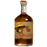

Картофельный самогон
Предметы / С врагов
Открыть в интерактивной вики →
| Вес | 1 |
|---|---|
| Цена | 200 |
Описание
Бутылка известного пойла, названного картофельным самогоном. Славится огромной популярностью среди местных. Продайте его кому-нибудь на рынке в Трентисе.
| Бутылочка знаменитого самогона — яблоновки. Говорят, у местных она в большом почёте. Продай кому-нибудь на рынке в Трентисе. |
Рецепт

Где создать

Дроп
Применение
|
Как добыть
| Получаем за победу над: |